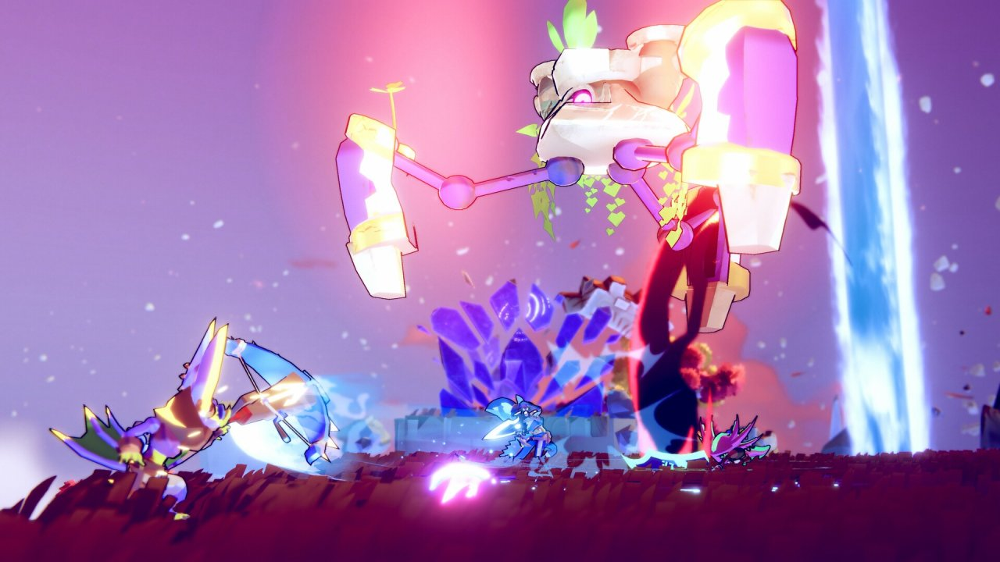

First Step:欣赏与感受
你将踏入人类最后的城市——海汶斯威尔，探索其中阴冷潮湿的地下水道、层层交错的贫民窟、 湖面之上的空中城市……在怪物横行的废墟中探寻文明毁灭的真相。

浮舟镇一如往常平静安稳，你们居于此地；在这个漂浮的村落外环绕着一个庞大又危险的漩涡。
在庙会上失踪的阮老爷、突然死亡的旺财、沉船口的恩怨纠葛、下水道中残存的断肢，穿梭在暗水城风格迥异的区域调查各种离奇的命案。
Second Step:学习与进阶
进入引擎的世界！
游戏引擎是什么？
游戏引擎是一种软件程序或环境，为开发人员提供创建视频游戏、图形和可视化所需的工具和 API，这包括从人 工智能和动画到物理模拟和音频的所有内容。
游戏引擎为所有视频游戏创作提供了框架，让开发人员可以将注意力集中在游戏内容上，而不是更详细的技术细节上。
learn more加入Catalyst社区！
何为开发者社区？
游戏开发者社区是一个集合了来自世界各地的游戏开发者、设计师、艺术家和程序员的在线平台，他们在这里交流想法、分享经验、协作开发项目，并共同解决技术难题，从而推动游戏行业的创新和发展。
社区不仅提供了一个技术交流和知识共享的空间，还为游戏开发者提供了展示作品、获取反馈和建立职业网络的机会，对游戏产业的持续繁荣和人才的成长具有深远的影响。
join itThird Step:创造与开阔
确立核心循环。这是定义游戏的核心系统，包含玩家会意识到自
己在重复的系统和机制。设计师往往专注于某个特定机制，
而非优先考虑核心循环，但事先厘清对玩家体验的预期，
能帮设计师发现哪些功能需要被重点关注，哪些功能可以延
后或舍弃。尽管控制规模（scope）不至臃肿非常重要，但
前述建议有助于设计出不会阻碍今后扩容的系统。我经常会
问自己：“这是不是会阻碍我们在未来增加某个系统或功能？”
创建一个用户旅程故事板（user journey storyboard）。
用它来具象化以下问题：玩家会在每次体验中做些什么，什么
类型的玩家会玩你的游戏，玩家日常或每周的玩法，他们的游
玩环境，以及你希望他们展现的社区行为。
在概念变得充实之后，就可以付诸实践了！你需要进行原型设
计、游戏测试并开发垂直切片（vertical slice）。垂直切片
是一个可玩的、游戏机制较为完善的版本，是体现游戏内容、
美学风格、用户界面、音乐和音效的一个切片。